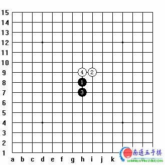
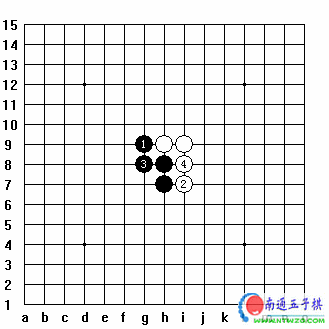
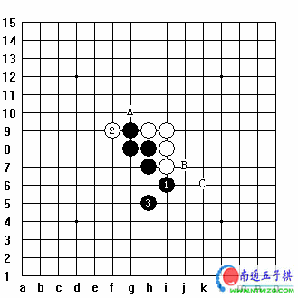

连珠定式学习的四个阶段
#1 连珠定式学习的四个阶段 作者：有志青年 发表时间：2006-11-18 14:28:32
一、棋理分析阶段：

这个是银月开局白 4 应 H9 的定式之一；
我们知道银月是五大必赢局之一。但银月有自身的特点，请看下图：

黑 1 应 G9 ，白 2 应 I7 ；黑 3 聚力并形成平行四边形（双三角）的进攻棋型。白 4 在 I8 反三。

#2 Re:连珠定式学习的四个阶段 作者：有志青年 发表时间：None
二、定式的求变阶段：
当你非常熟悉这个定式（明白了这个定式中每一步的道理以后），甚至你可以闭着眼睛都能走的出来的时候，其实这只完成了第一阶段的学习，到这个时候，你还没有入门。
你就必须进入第二个阶段：定式求变。
定式的学习要追求变化，棋型的变化通常是采用倒推方法，及从后边的手数开始倒推变化，比如最后一个图中，你就要变化白的应点了，首先你要假设，白 7 如果应在另一边，黑该怎么杀？
好的我们推算出来了，白
7
对黑的杀法没有影响，那么我们就知道了，白
7
无论应那边，黑都一样的杀法。如实开始变化白
5
的应点，白
5
是应的黑冲
4
的点，所以不能变，那么白
5
应点变化也推断完了，再推白
3
的变化，白
3
的变化就很多了，除了图中的应点变化以外，还可以应在
G6
、
J6
、
L6
by:web版  IP：
已记录
IP：
已记录
#3 Re:连珠定式学习的四个阶段 作者：五子天下 发表时间：2008-5-9 16:11:41
有点意思~
#4 Re:连珠定式学习的四个阶段 作者：汪洋孤舟 发表时间：2008-5-20 11:09:33
这个要慢慢看，慢慢理解了呵！#5 Re:连珠定式学习的四个阶段 作者：先期 发表时间：2008-6-1 21:38:39
看过之后顿开茅塞，谢谢了！#6 Re:连珠定式学习的四个阶段 作者：石投 发表时间：2008-6-11 9:34:12
以上慧星局里,"黑石"里黑10应H10有解.
#7 Re:连珠定式学习的四个阶段 作者：零点 发表时间：2008-6-28 19:07:45
这帖子太好了.望楼主多发点,看了受益匪浅
#8 Re:连珠定式学习的四个阶段 作者：越狱行辕 发表时间：2008-7-1 15:46:26
楼主五大必胜都有什么啊 ，花月，蒲月 云月 银月 雨月？#9 Re:连珠定式学习的四个阶段 作者：我把自己丢拉 发表时间：2008-7-5 10:55:27
 自己还刚刚是看见门,连框还没摸到呢.
自己还刚刚是看见门,连框还没摸到呢.
#10 Re:连珠定式学习的四个阶段 作者：超级菜鸟徒弟 发表时间：2009-3-14 15:12:23
我是门都还没看见，现在还不知道离门有多远
#11 Re:连珠定式学习的四个阶段 作者：爱玩 发表时间：2009-4-19 14:10:24
为什么金币不够
[有志：金币慢慢积累]
［此帖子已被 有志青年 在 2009-4-19 14:35:09 编辑过］
#12 Re:连珠定式学习的四个阶段 作者：超级天逸超人 发表时间：2009-4-19 15:48:04
嘿嘿~ 您能教我下棋吗
有志老师（有智老师） 嘿嘿
#13 Re:连珠定式学习的四个阶段 作者：英雄九段 发表时间：2009-4-19 23:17:53
Re:连珠定式学习的四个阶段自己还刚刚是看见门,连框还没摸到呢.